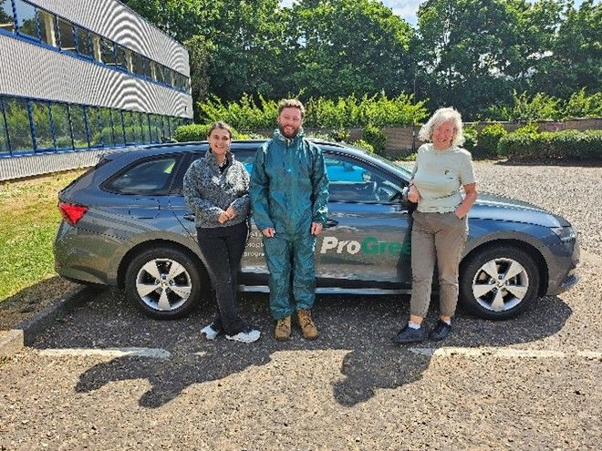
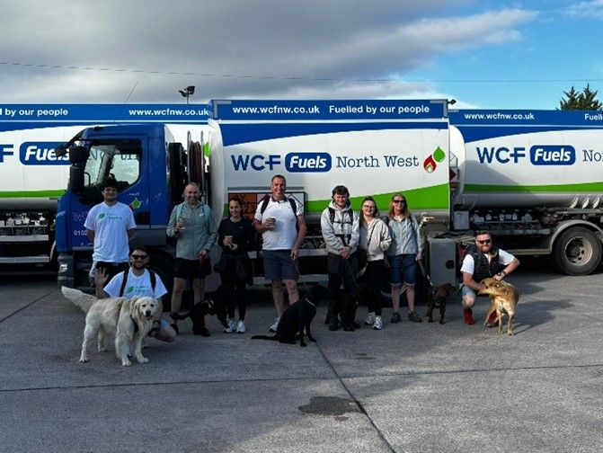
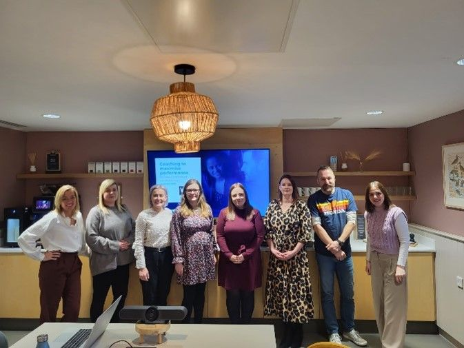
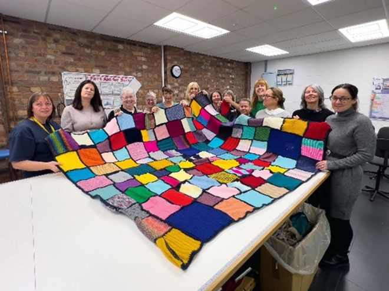
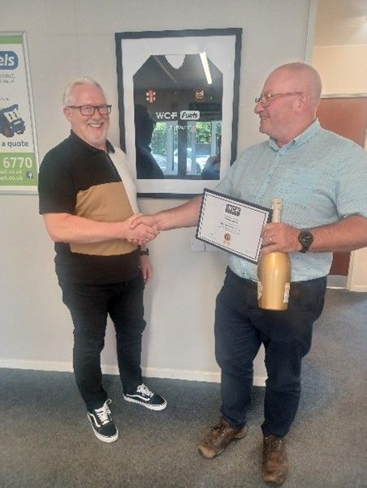
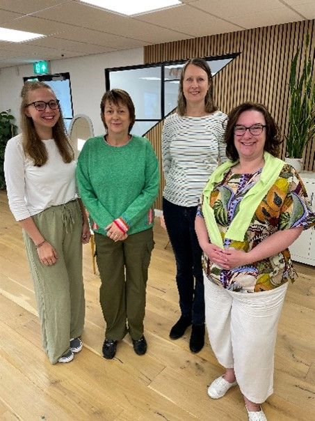
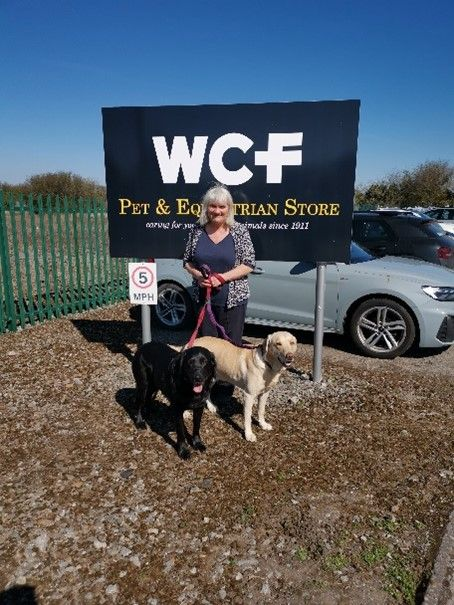

We’re Creating our Future
Hi everyone,
My name is Karen, and I am the Head of People and Culture here at WCF. I wanted to give you a little peek behind the curtain at what it’s really like to work here, not just what we do, but what it feels like to be part of this unique, employee-owned business.
First off, if you have had a little look around our website already, you will see that WCF isn’t your typical company. We’re made up of 10 diverse businesses, spread across more than 30 different sites across the UK. That means there's always something interesting going on, and there’s never a shortage of opportunities to connect with amazing people doing amazing things for our customers — from retail and logistics to amenity and leisure.

In my role, I have the privilege of working across all of these businesses, helping to support and grow the people who make WCF what it is. That’s the heart of my job — making sure our colleagues have the support, tools, and opportunities to be their very best. Whether someone is just starting out or looking to grow into leadership, we're here to help make that journey happen.


One of the things that really sets WCF apart is our employee ownership model. Every single one of us who works here is an Owner in this business. That’s not just a line on paper, it genuinely shapes how we work, how we treat each other, and how we show up for our customers. When the business thrives, we all share in that success. There’s a sense of pride and responsibility that comes with that, and you can feel it in every part of the company.

What really makes me proud is how much our people care — about their work, about each other, and about our customers. There’s this strong sense of community and purpose working for WCF, and it is a place where people are genuinely passionate about making a difference. It’s not uncommon to see someone go the extra mile (in our fuels businesses – literally!), simply because they care.
Here at WCF, we believe in the idea that we all create our future. It’s our ethos and we’re all working together to leave something even better behind for the next generation of employee-owners. Whether it’s through developing new ideas, improving how we work, or mentoring the next wave of talent, everyone has a part to play in shaping the legacy of WCF.



So, if you’re someone who wants to learn, grow, and be part of something special, WCF might just be the place for you. If you’d like to know more about our business, or what opportunities are available – have a look at our ‘current vacancies’ page on our website, or get in touch via email, karen.kelso@wcf.co.uk..
Thanks for reading!
Karen